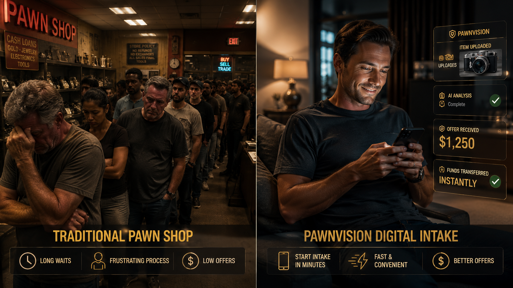
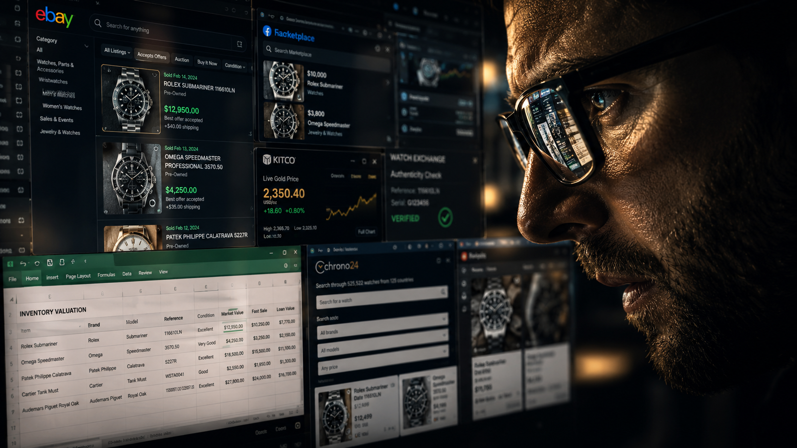
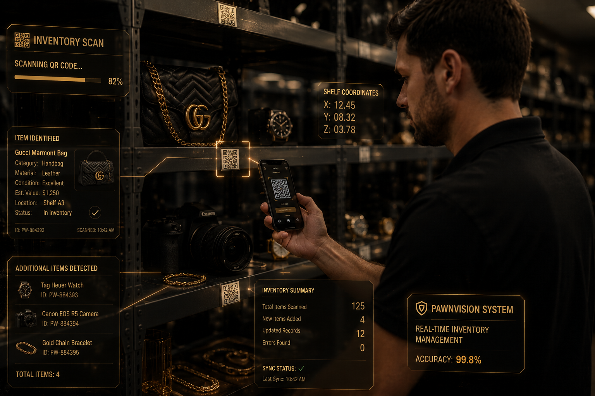

Customers submit before they load the car or stand in line.
Remote Intake For Modern Pawn Operations
Know before you drive to the pawn shop.
Know what it’s worth before it hits the counter.
Customers submit a photo and short description. PawnVision OS organizes the evidence, surfaces conservative pricing support, and gives brokers a faster first pass before the item reaches the store.
Built for modern pawn operations
Broker-controlled workflow
Remote intake in under 30 seconds
PawnVision OS walkthrough
Watch on YouTube
Problem
Stop wasted trips, long lines, and blind intake.
Customers hate driving in without direction. Brokers hate spending time on items that were never a fit. PawnVision OS qualifies the item before the counter conversation starts.
- Know before you drive to the pawn shop
- Cut intake time
- Reduce lowball uncertainty

Remote Intake
Start intake before the customer ever walks in.
One photo. One short description. Then the system asks for the next best evidence before staff time gets spent.
- Stop wasted trips
- Request the right photos first
- Keep intake short and broker-ready
AI Review
Surface the first pass in seconds.
Category, visible condition, issues, requested photos, and conservative ranges show up fast. The broker starts with structure instead of guesswork.
- Organize photo evidence automatically
- Flag missing details early
- Build a conservative starting point

Broker Decision
AI gives the first pass. The broker makes the call.
The broker reviews the evidence, adjusts the numbers, requests more photos, or rejects the item before valuable time gets wasted.
- Approve or adjust fast
- Keep final offers broker-controlled
- Stay grounded in market proof and evidence
Live Decision Examples
What real first-pass output should look like.
Short. Conservative. Operational. Enough to help a broker decide what happens next.
Ticket #PV-20481
Approved for intake
PS5 Intake
PS5 Disc Console + Controller
Broker verdict
Ready for final review
Ticket #PV-20482
Review Pending
Rolex Verification
Rolex Datejust 36
Broker verdict
Serial + bracelet confirmation pending
Ticket #PV-20483
Fast local mover
Milwaukee Tool Local Velocity
Milwaukee M18 Drill Set
Broker verdict
In-store function test recommended
Inventory Tracking
Move approved items straight into smart inventory.
Once the item is worth bringing in, PawnVision OS can hand it off into tags, QR mapping, and trackable shelf location.
- Tag inventory instantly
- Track shelf position
- Keep records attached to the ticket

Faster Resale / Better Operations
Buy smarter. Move inventory faster.
Cleaner intake creates cleaner pricing, faster handoff, and better resale decisions across the floor and across locations.
- Faster resale decisions
- Cleaner inventory handoff
- Better multi-location visibility
Demo CTA
See the workflow from customer upload to broker decision.
The demo is the proof. The website is the explanation. Start with the workflow that owners and brokers actually need to see.
Built for modern pawn operations
Broker-controlled workflow
Remote intake in under 30 seconds